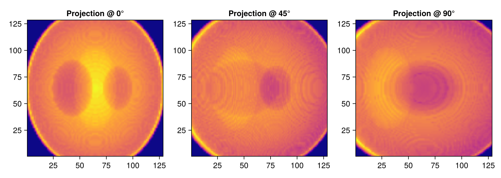
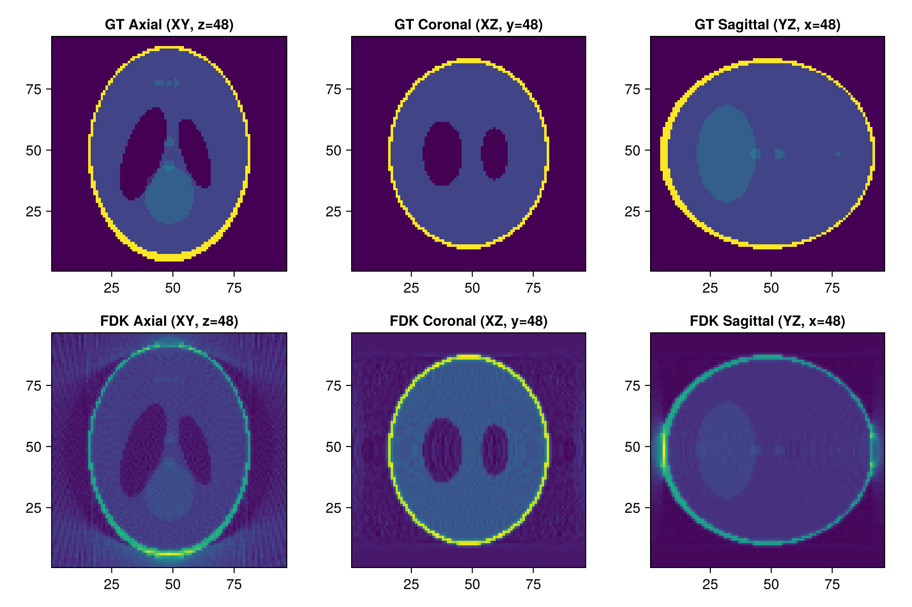

Tutorial 4: 3D Cone-Beam CT and FDK Reconstruction
3D Shepp-Logan Phantom, GPU Cone-Beam Projection, Feldkamp (FDK) Reconstruction, and Multi-planar Orthogonal Slices.
Prerequisites
This tutorial uses Makie (recommended backend: CairoMakie) for visualization. If CairoMakie is not installed in your environment, add it by running using Pkg; Pkg.add("CairoMakie").
1. Introduction
In industrial inspection, dental radiology, and micro-CT, 3D Cone-Beam CT (CBCT) is the predominant acquisition mode. A point X-ray source emits a conical beam projecting 2D shadowgrams onto a flat-panel detector while the object rotates 360°.
The FDK (Feldkamp-Davis-Kress) algorithm is the industry-standard analytical reconstruction method for circular cone-beam CT. In AstraToolbox.jl, 3D cone-beam projection and FDK reconstruction are accelerated using native CUDA kernels.
Topics covered in this notebook:
- Defining 3D volume geometry (
VolumeGeometry3D) and generating a 3D Shepp-Logan phantom. - Defining 3D circular cone-beam geometry (
Cone3DGeometry). - Simulating 3D cone-beam projection data using GPU acceleration.
- Fast 3D reconstruction with
FDK3DMethod. - Visualizing multi-planar orthogonal slices (Axial, Coronal, Sagittal) using Makie.
2. Package Loading and Environment Setup
using AstraToolbox
using CairoMakie
println("Has CUDA available: ", has_cuda())
if !has_cuda()
@warn "CUDA is not detected. 3D cone-beam reconstruction requires an NVIDIA GPU."
end3. Defining 3D Volume Geometry and Generating Phantom
Define a $96 \times 96 \times 96$ volume domain with VolumeGeometry3D. Generate a 3D Shepp-Logan phantom using shepp_logan_3d(N).
# Define a 96x96x96 3D volume geometry
nx, ny, nz = 96, 96, 96
vol_geom = VolumeGeometry3D(nx, ny, nz)
# Generate 3D Shepp-Logan phantom (Float32 Array)
phantom_3d = shepp_logan_3d(nx)
println("3D Volume shape: ", size(phantom_3d))
println("Min/Max attenuation: ", extrema(phantom_3d))4. Defining 3D Cone-Beam Projection Geometry (Cone3DGeometry)
Cone3DGeometry Arguments:
angles::Vector{Float32}: Array of rotation angles over $0$ to $2\pi$.detector_count_u::Int: Number of detector columns (horizontal).detector_count_v::Int: Number of detector rows (vertical).source_origin::Float32: Distance from X-ray source to rotation center (SOD).origin_detector::Float32: Distance from rotation center to detector (ODD).detector_spacing_u, detector_spacing_v: Physical pixel pitch of the detector.
# 120 angles from 0 to 2pi
num_angles = 120
angles = Float32.(range(0, 2pi, length = num_angles))
det_u, det_v = 128, 128
sod = 800.0f0 # Source-to-Origin Distance
odd = 400.0f0 # Origin-to-Detector Distance
proj_geom = Cone3DGeometry(
angles, det_u, det_v, sod, odd;
detector_spacing_u = 1.0f0, detector_spacing_v = 1.0f0
)
println("Cone3DGeometry created. Sinogram size: ", geom_size(proj_geom))5. Performing 3D GPU Forward Projection
Compute 2D conical projections at each rotation angle. In AstraToolbox.jl, 3D projection data follows the zero-copy column-major layout (u, angles, v), where u is detector column (horizontal), angles is projection angle, and v is detector row (vertical).
# Execute 3D forward projection
sino_3d = project(phantom_3d, proj_geom; backend = cuda())
println("Cone-beam projection finished! Size: (u, angles, v) = ", size(sino_3d))
# Visualize projection images at 0°, 45°, and 90° (slicing angle index along the 2nd dimension: sino_3d[:, angle_idx, :])
fig = Figure(size = (900, 320))
ax1 = Axis(fig[1, 1], title = "Projection @ 0°", aspect = DataAspect())
heatmap!(ax1, sino_3d[:, 1, :], colormap = :plasma)
ax2 = Axis(fig[1, 2], title = "Projection @ 45°", aspect = DataAspect())
heatmap!(ax2, sino_3d[:, num_angles ÷ 8, :], colormap = :plasma)
ax3 = Axis(fig[1, 3], title = "Projection @ 90°", aspect = DataAspect())
heatmap!(ax3, sino_3d[:, num_angles ÷ 4, :], colormap = :plasma)
fig
6. Fast 3D Reconstruction with Feldkamp-Davis-Kress (FDK)
Apply GPU-accelerated FDK reconstruction using FDK3DMethod().
# 3D reconstruction with FDK_CUDA
rec_fdk = reconstruct(sino_3d, proj_geom, FDK3DMethod(); volume_size = (nx, ny, nz), backend = cuda())
println("3D FDK reconstruction completed!")7. Multi-Planar Orthogonal Slices (Axial, Coronal, Sagittal)
Display central cross-sections in all three anatomical planes side-by-side with ground-truth slices.
mid_x, mid_y, mid_z = nx ÷ 2, ny ÷ 2, nz ÷ 2
fig = Figure(size = (900, 600))
# Ground Truth slices
ax1 = Axis(fig[1, 1], title = "GT Axial (XY, z=$mid_z)", aspect = DataAspect())
heatmap!(ax1, phantom_3d[:, :, mid_z], colormap = :viridis)
ax2 = Axis(fig[1, 2], title = "GT Coronal (XZ, y=$mid_y)", aspect = DataAspect())
heatmap!(ax2, phantom_3d[:, mid_y, :], colormap = :viridis)
ax3 = Axis(fig[1, 3], title = "GT Sagittal (YZ, x=$mid_x)", aspect = DataAspect())
heatmap!(ax3, phantom_3d[mid_x, :, :], colormap = :viridis)
# FDK Reconstructed slices
ax4 = Axis(fig[2, 1], title = "FDK Axial (XY, z=$mid_z)", aspect = DataAspect())
heatmap!(ax4, rec_fdk[:, :, mid_z], colormap = :viridis)
ax5 = Axis(fig[2, 2], title = "FDK Coronal (XZ, y=$mid_y)", aspect = DataAspect())
heatmap!(ax5, rec_fdk[:, mid_y, :], colormap = :viridis)
ax6 = Axis(fig[2, 3], title = "FDK Sagittal (YZ, x=$mid_x)", aspect = DataAspect())
heatmap!(ax6, rec_fdk[mid_x, :, :], colormap = :viridis)
fig